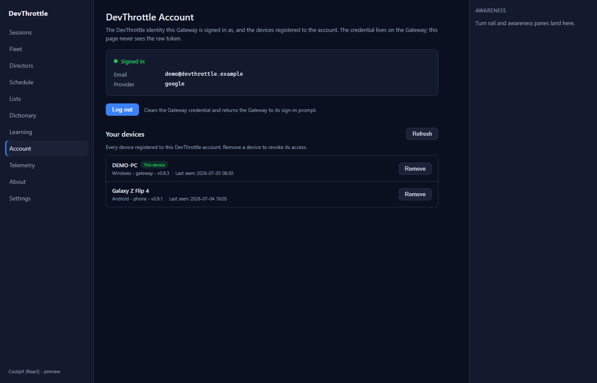
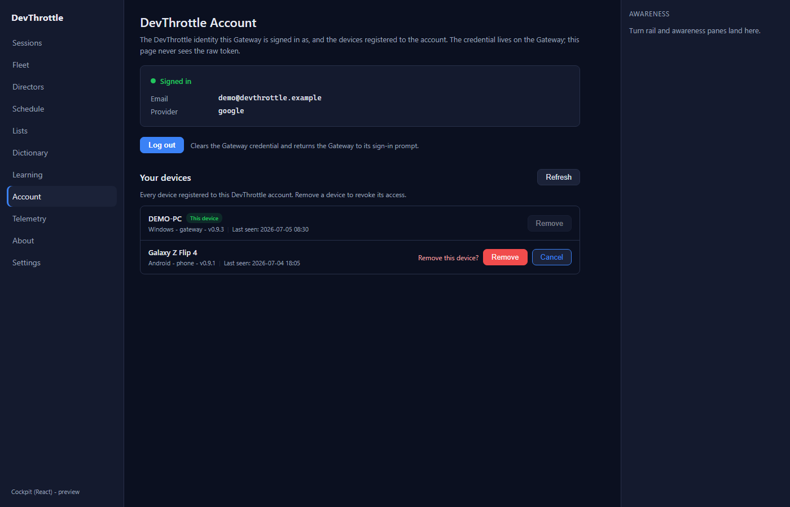
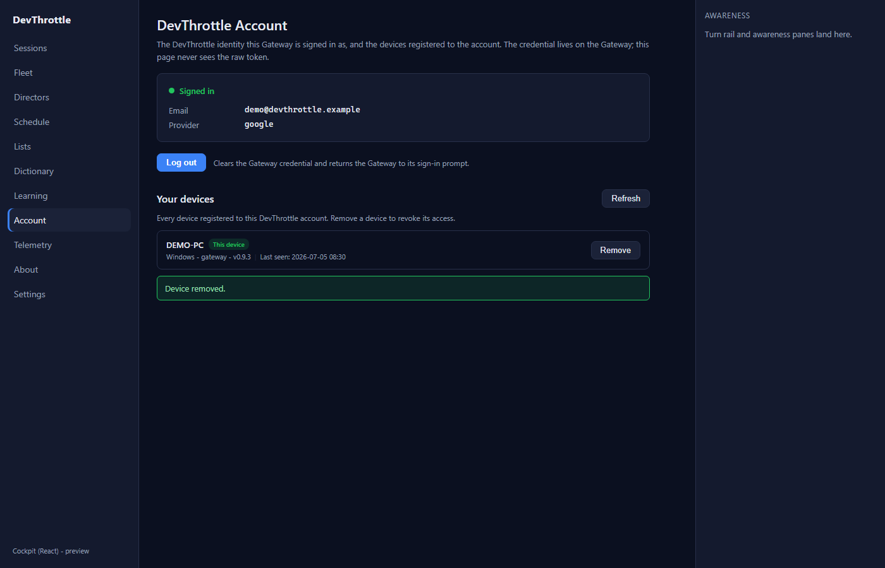
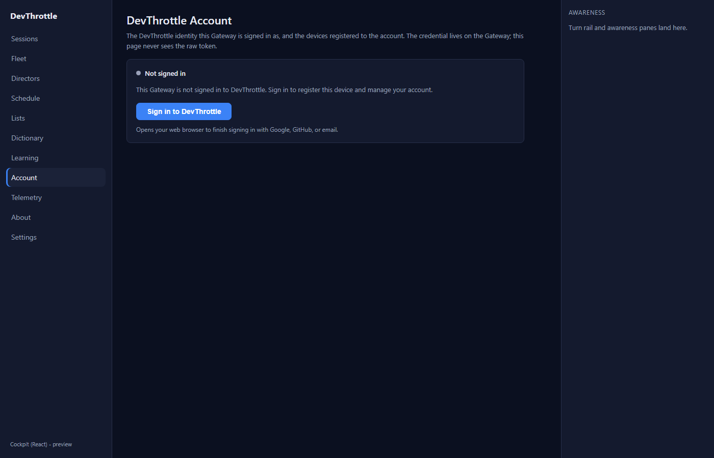
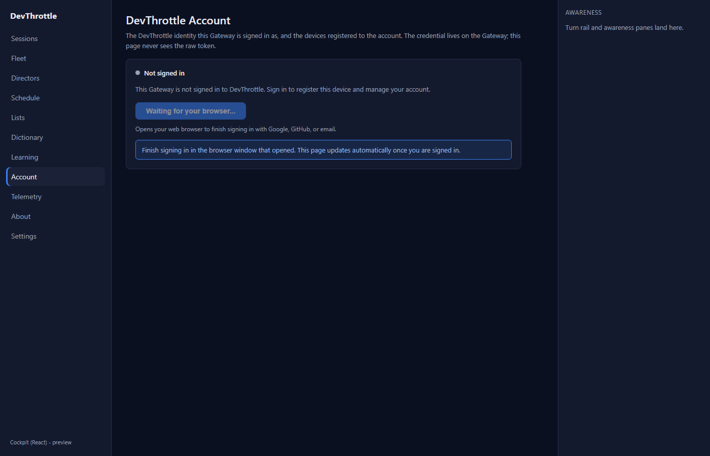
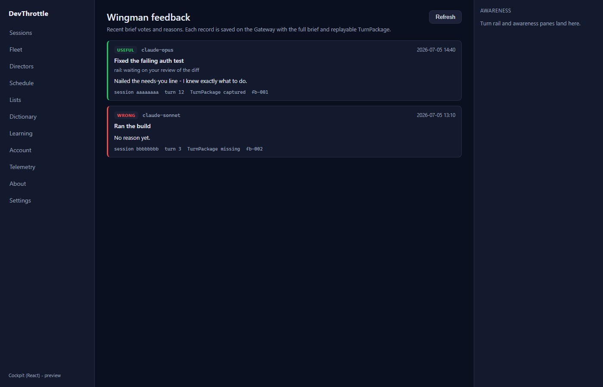
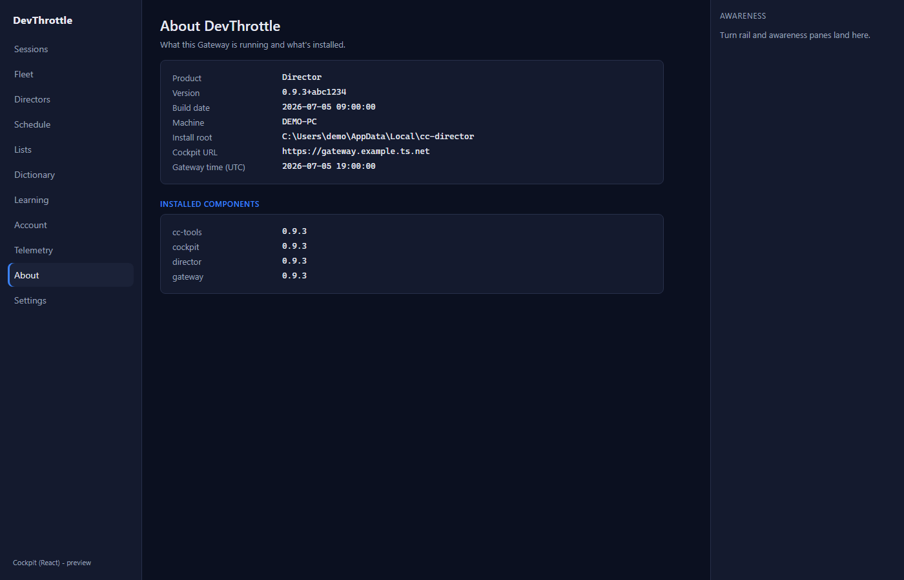

Issue #978 - Cockpit React: port Telemetry + Account + Feedback + About + the roster entry pages
Epic #967 (Rebuild the Cockpit in React), the LAST page-port. Developer Agent proof.
Each settings/misc page was ported one-to-one from its Blazor component into the
apps/cockpit React shell, reading and writing same-origin through the Gateway front door
(root-relative paths only). The roster entry paths were aligned to the single rail-plus-terminal core,
and the static Settings page + navigation were re-homed into the React shell's rail.
What was implemented
Four new React views, each a faithful port of its Blazor page, plus four new typed client-core modules (one per Gateway surface) so the desktop shell keeps exactly one copy of each contract. The session entry paths were aligned to the existing core (no duplicate session view), and the static Settings page was re-homed as a full-load rail link.
| Page | Route | React view | client-core module | Gateway surface (root-relative) |
|---|---|---|---|---|
| Telemetry | /telemetry | telemetry/TelemetryView.tsx | telemetry/telemetryClient.ts | GET/PUT /gateway/telemetry-consent |
| Account | /account | account/AccountView.tsx | account/accountClient.ts | /account/status, /account/logout, /account/sign-in, /account/devices, /account/devices/{id} |
| About | /about | about/AboutView.tsx | about/aboutClient.ts | GET /gateway/about |
| Feedback (Wingman corpus) | /feedback | feedback/FeedbackView.tsx | feedback/feedbackClient.ts | GET /turnbriefs/feedback |
| Roster entry (Home/Sessions/SessionDetail) | /cockpit, /cockpit/{sid}, /sessions, /sessions/{sid} | sessions/SessionRedirect.tsx + main.tsx | (reuses the #972 rail-plus-terminal core) | /sessions, /directors |
| Settings (static tool page) | /settings | AppShell.tsx rail link | (none - Gateway static page) | /settings (full document load) |
Per the Blazor NavMenu (which shows Account, Telemetry, About and Settings in the rail, and reaches Feedback by its direct route), Account, Telemetry, About got a left-rail entry and a full-load Settings link was added; Feedback is route-only.
Roster/detail entry-page alignment (no duplicate session view)
The Blazor Cockpit reached one session through several paths - /cockpit/{sid} (drive it)
and /sessions/{sid} (the read-mostly detail) - and had a Home dashboard and a Sessions
list. The React shell has ONE session experience: the rail-plus-terminal core built in #972 (the
roster on the left, the live terminal + brief + history + action bar on the right). Per the issue's
explicit steer ("align ... so there is no duplicate session view"), those Blazor entry paths redirect
into that single core rather than standing up a second dashboard / list / detail. This keeps every
Blazor entry path reaching a page for the cutover (#979): the id paths land on that session in the
core; the bare list/home paths land on the roster index (which is the sessions list).
Acceptance criteria → how each is met
| Criterion | How it is satisfied | Proof |
|---|---|---|
| Telemetry, Account, About, Feedback render the same information and support the same actions as their Blazor counterparts. | Each view is a one-to-one port of its .razor: same fields, same actions, same
states (loading / error / empty), reading and writing the same Gateway endpoints. Telemetry
toggles consent; Account signs in / logs out / lists + revokes devices; About shows the
diagnostics grid + installed components; Feedback lists the Wingman vote corpus with Refresh. |
telemetry*.png, account-*.png, about.png, feedback.png |
| Writes actually reach the right endpoint/method/body. | Driven against an isolated mocked Gateway that records each write. Recorded:
PUT /gateway/telemetry-consent {"enabled":false},
DELETE /account/devices/dev-2,
POST /account/sign-in. The device row disappeared and "Device removed." showed after
the revoke; the telemetry banner flipped to OFF after the PUT. |
capture-summary.json, telemetry-off.png, account-removed.png |
| The React shell's navigation reaches every page; no Blazor path is still required. | The left rail now lists Sessions, Fleet, Directors, Schedule, Lists, Dictionary, Learning,
Account, Telemetry, About and a full-load Settings link. The Blazor session entry paths
(/cockpit, /cockpit/{sid}, /sessions,
/sessions/{sid}) redirect into the core. Every Blazor Cockpit page now has a React
equivalent reachable from the shell. |
nav-rail.png, capture-summary.json (redirects, settingsLink) |
| No absolute URLs in the client (lint rule passes). | Every new client module and view uses root-relative paths only. npm run lint
(the Gateway-only-ingress rule) passes clean across the workspace. |
build gate below |
Feedback scope note (preserving the real flow)
The Cockpit's Feedback.razor is the Wingman feedback corpus reader (brief
votes + reasons, issue #207) served from GET /turnbriefs/feedback - a read-only list.
This port matches it one-to-one. The separate "Help → Send Feedback" flow that files a GitHub
issue on thefrederiksen/devthrottle with a screenshot on the feedback-assets
branch is CcDirector.Core.Feedback.FeedbackService - a desktop-app feature the
Cockpit never served (it is not wired to any Cockpit or Gateway endpoint). It is therefore out of
scope for this Cockpit React port and is left untouched. No real GitHub issue was filed during proof;
the Feedback page's wiring was verified against an isolated mocked Gateway.
Screenshots (real React screens, isolated mocked Gateway)










Build gate
- PASS -
npm run build --workspace @devthrottle/cockpit(tsc --noEmit + vite build): 103 modules, built clean. - PASS -
npm run lint(Gateway-only-ingress, no absolute URLs): clean across the workspace. - PASS -
dotnet build src/CcDirector.Gateway -p:RunCockpitBuild=true: 0 warnings, 0 errors; the React bundle staged intowwwroot/c. - PASS -
dotnet build cc-director.sln: 0 warnings, 0 errors. - Known baseline:
packages/client-coretypecheck still fails only on the pre-existingawarenessClient.test.ts(#1010). No NEW typecheck/test failure was introduced - the four new client modules and views typecheck clean.
CenCon impact
No architecture or security drift. This is a client-only React port over the existing Gateway REST surface (no new endpoint, no new Director capability, no auth change). The credential-safety contract is preserved: the Account client never fetches, stores, or displays the raw token (security rule DT-05); every request is root-relative to the Gateway front door.